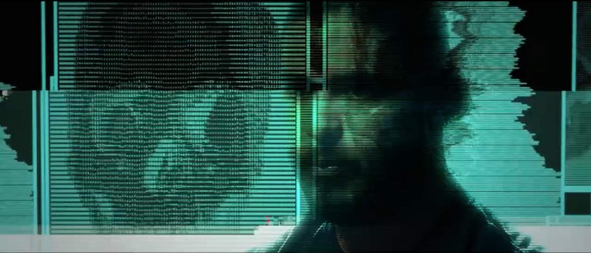

Krasznahorkai László a következőt írta:
Az internet (...) az eddigi legbiztosabb út az
örökkévalóságba..
Hogy ez igaz-e, mindenki döntse el maga, miután
megnézte a listámban szereplő filmeket.
Figyelem!A lista erősen szubjektív.
Social Network - A közösségi háló
Mark Zuckerberg jobban ért a számítógépekhez,
mint a csajozáshoz. A Harvard egyetem diákja ideje nagy részét a gépe
előtt tölti. 2003-ban új ötlettel áll elő: egy olyan
oldalt indít a világhálón, ahol a haverok
közösségi életet élhetnek.
A kollégiumi szobából indult Facebook valóságos
kommunikációs forradalmat hozott, és alapjaiban változtatta meg
a világot, az emberi kapcsolatokat - és megváltoztatta az alkotóját
is. Hat esztendővel és ötszázmillió ismerőssel később Zuckerberg a
világ legfiatalabb milliárdosa.
Egykor békés, nyugodt életről álmodott, a siker azonban felkavarta
mind a szakmai, mind a magánéletét.
A Social Network - A közösségi háló a korszellemet grabancon
ragadó, aktuális, de időtálló munka, ami nem csak, hogy sokkal jobb
móka, mint két óra facebookozás, de biztos, hogy évek-évtizedek
távlatából is élvezhető lesz.
Jelenet a Social Network - A közösségi háló című filmből
Forráskód a filmben
A filmben nagy figyelmet fordítottak arra is, hogy a megjelenő
forráskódok a témához kapcsolódjanak. Íme egy példa:
A filmzenéből
Trent Reznor and Atticus Ross: A Familiar Taste című
száma a kedvencem.
media/socialnetwork.mp3
A nő
Los Angelesben, a közeli jövőben él Theodore Twombly író, aki abból
él, hogy megható, személyes leveleket ír mások számára. A férfi
rossz passzban van, próbálja kiheverni, hogy tönkrement egy hosszú
kapcsolata. A számítógépein dolgozik és játszik.
Egy nap unalmában letölt egy új,
intelligens operációs programot. Így találkozik Samantha-val,
pontosabban a hangjával, amely valósággal megigézi. Kiderül, hogy
Samantha okos és éleslátó, érzékeny és meglepően vicces. A kezdeti
barátságuk egyre jobban elmélyül.
Spike Jonze A nővel gyakorlatilag megalkotta a tökéletes
szerelmesfilmet, amelyből egyszerre derül ki, hogy ez az egész
felhajtás mekkora baromság, és hogy nem érdemes élni nélküle.
A film előzetese
media/her_elozetes.mp4
Te meg én és minden ismerősünk
Miranda July, multimédia-performer és zenész éleslátó és rendkívül
szórakoztató filmet készített olyan magányos emberekről, akik
megpróbálnak kapcsolatot teremteni környezetükkel. Azokat a
külső és belső gátakat mutatja meg, amik magányos, modern világunkban
gyakran meghiúsítják az egymással való kapcsolatteremtést. July
szerint "a történet elérhetetlen vágyakat tápláló gyerekekről és
felnőttekről szól, akik olyan korban élnek, mikor a felnőtté válás
digitális folyamat és a valóság esztétikai döntésünk függvénye".
A Miranda July korábbi műveiben felvetett témák folytatásának
tekinthető Te meg én és minden ismerősünk leleplezi az emberek
titkolt érzéseit, vágyait és motivációit. Az eredmény egy gyönyörű,
egyedi film, amely észrevétlenül ejti rabul az ember szívét.
Jelenet a Te meg én és minden ismerősünk című filmből
Deep web
Az internet nem csak hírportálokból, közösségi oldalakból és cuki
állatos videókból áll. A keresőmotoroktól elzárva ott húzódik a
felszín alatt az úgynevezett deep web, vagy más néven dark web, a
világháló sötét oldala. Anonimitásba burkolózott
felhasználók szörföznek az internet sötét hullámain, ahol burjánzik a
drog- és fegyverkereskedelem, és mindenre van kereslet, ami
illegális.
Alex Winter dokumentumfilmje mélyen elmerül a deep web titkaiban.
Kiderül, hogy az igazságszolgáltatásnak nem csupán az utcán kell
üldöznie a bűnözőket, hanem a virtális világban nyüzsgő arctalan
törvényszegőkkel is kénytelen megküzdeni. Mi, átlagfelhasználók nem
is sejtjük, micsoda üzelmek folynak az internet rejtett bugyraiban.
Egészen addig, amíg meg nem nézzük a Deep Web dokumentumfilmet.

Jelenet a Deep Web című filmből
Mi is az a deep web?
Az alábbi angol nyelvű prezentáció bemutatja, hogy mi is az a deep
web